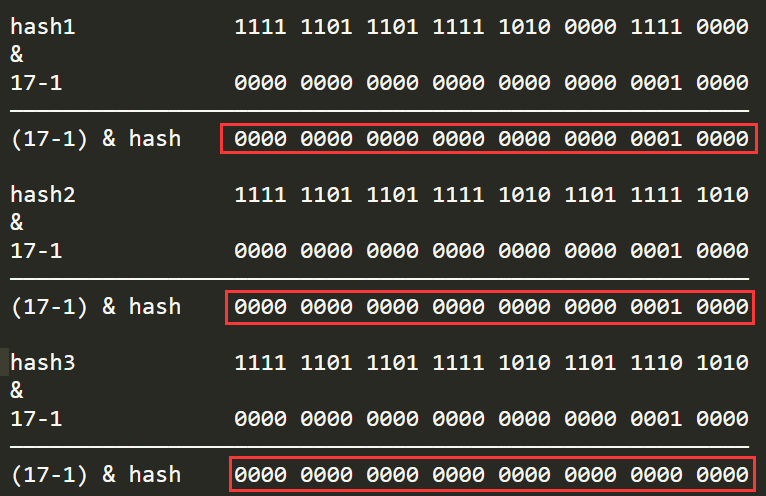

原文连接:https://www.cnblogs.com/houhou929/p/11612403.html
HashMap_详解
简述
- 实现了什么接口
- Map 和 抽象类AbstractMap
- Cloneable
- Serializable
- 核心内容
- 线程不同步。根据
key的hashcode进行存储，内部使用静态内部类Node的数组进行存储，默认初始大小为 16，默认负载因子 0.75，每次扩大一倍。 - 当发生 Hash 冲突时，采用拉链法（链表）。JDK 1.8优化：当单个桶中元素个数大于等于8时，链表实现改为红黑树实现；当元素个数小于6时，变回链表实现
- HashMap 是 Hashtable 的轻量级实现，可以接受为 null 的键值 (key) 和值 (value)，而 Hashtable 不允许
- 线程不同步。根据
- 优缺
- 扩容消耗大，建议自定义初始容量
- key为复杂类型时，的内存溢出问题
重要的属性
默认常量
/** * The default initial capacity - MUST be a power of two. * 默认容量16 建议容量为2的n次幂 */ static final int DEFAULT_INITIAL_CAPACITY = 1 << 4; // aka 16 /** * 默认负载因子 * The load factor used when none specified in constructor. */ static final float DEFAULT_LOAD_FACTOR = 0.75f; // 所以默认可以容纳元素个数(阈值) 16 * 0.75 = 12 /** * 最大容量 * The maximum capacity, used if a higher value is implicitly specified * by either of the constructors with arguments. * MUST be a power of two <= 1<<30. */ static final int MAXIMUM_CAPACITY = 1 << 30;hash桶数组中存储方式：链表、红黑树转换的阈值
/** * hash桶的存储方式由list转为tree的转换阈值(插入第9个元素时，list转为tree) * 该阈值必须大于2，并且至少应为8才能与树删除中的假设（收缩时转换回普通箱）相啮合 */ static final int TREEIFY_THRESHOLD = 8; /** * 在调整hash桶大小的操作中，取消hash桶的树化存储的计数阈值 * (当一个hash桶中的元素小于该值时，转换成链表存储) * 应该小于TREEIFY_THRESHOLD，且最大为6，用于删除操作后的收缩检查 */ static final int UNTREEIFY_THRESHOLD = 6; /** * hash桶树化存储的table的最小容量。（否则，如果hash桶中的节点过多，将调整table的大小。） * 应至少为 4 * TREEIFY_THRESHOLD，以避免调整大小和树化阈值之间的冲突。 * 因为一个比较小，比较满的散列表的性能不如一个比较大，比较空的散列表， * 这种请款先考虑变大，而不是树化存储 */ static final int MIN_TREEIFY_CAPACITY = 64;几个核心属性
- table：哈希桶，存储的entry的数组
- capacity：table的最大容量
- size：table中实际存储的了多少个元素
- threshold：当size大于该阈值时table容量扩容1倍，threshold值刷新
/** * hash桶数组 * 第一次使用时初始化，根据需要调整大小(始终为2的n次幂) * 在某些操作中，我们还允许长度为零，以允许使用当前不需要的引导机制。 */ transient Node<K,V>[] table; // 集合中键值对的数量 transient int size; // 结构修改的次数 transient int modCount; // 下一个要调整大小的大小值 （容量*负载系数）【相当于扩容的阈值】 // 如果hash桶数组没有初始化，则该字段持有出事容量，或者是0(表示使用 DEFAULT_INITIAL_CAPACITY) int threshold; // 负载因子 final float loadFactor;计算hash值得方法
int hash = hash(key); // jdk7中确认entry存储在table[] 中的index int i = indexFor(hash, table.length); // 计算hash值 final int hash(Object k) { int h = hashSeed; if (0 != h && k instanceof String) { return sun.misc.Hashing.stringHash32((String) k); } h ^= k.hashCode(); // This function ensures that hashCodes that differ only by // constant multiples at each bit position have a bounded // number of collisions (approximately 8 at default load factor). h ^= (h >>> 20) ^ (h >>> 12); return h ^ (h >>> 7) ^ (h >>> 4); } public final int hashCode() { return Objects.hashCode(key) ^ Objects.hashCode(value); }哈希桶数组table[]中的Node数据类型：链表 or 红黑树
// 链表 static class Node<K,V> implements Map.Entry<K,V> { final int hash; //用来定位数组索引位置 final K key; V value; Node<K,V> next; //链表的下一个node Node(int hash, K key, V value, Node<K,V> next) { ... } public final K getKey(){ ... } public final V getValue() { ... } public final String toString() { ... } public final int hashCode() { ... } public final V setValue(V newValue) { ... } public final boolean equals(Object o) { ... } } // 红黑树node static final class TreeNode<K,V> extends LinkedHashMap.Entry<K,V> { TreeNode<K,V> parent; // 父 TreeNode<K,V> left; // 左 TreeNode<K,V> right; // 右 TreeNode<K,V> prev; // needed to unlink next upon deletion boolean red; // 判断颜色 TreeNode(int hash, K key, V val, Node<K,V> next) { super(hash, key, val, next); } // 返回根节点 final TreeNode<K,V> root() { for (TreeNode<K,V> r = this, p;;) { if ((p = r.parent) == null) return r; r = p; }
从构造方法--核心put()方法--到扩容resize()方法
构造方法
- 只针对(loadFactor + threshold)两个字段初始化，没有初始化 哈希桶数组table[]
public HashMap(int initialCapacity, float loadFactor) { if (initialCapacity < 0) throw new IllegalArgumentException("Illegal initial capacity: " + initialCapacity); if (initialCapacity > MAXIMUM_CAPACITY) initialCapacity = MAXIMUM_CAPACITY; if (loadFactor <= 0 || Float.isNaN(loadFactor)) throw new IllegalArgumentException("Illegal load factor: " + loadFactor); this.loadFactor = loadFactor; // 获得对应容量的 2的n次幂 this.threshold = tableSizeFor(initialCapacity); } // 构造新的HashMap 使用Map接口的集合: 使用默认loadFactor(0.75) 足以(最小可用)将映射保存在指定Map中的初始容量 public HashMap(Map<? extends K, ? extends V> m) { // int threshold; 这个字段没有赋值，应为默认值 threshold = 0 this.loadFactor = DEFAULT_LOAD_FACTOR; putMapEntries(m, false); } //特定容量 + 默认负载因子0.75 public HashMap(int initialCapacity) { this(initialCapacity, DEFAULT_LOAD_FACTOR); } //默认负载因子0.75 + threshold = 0 (数据类型默认值) public HashMap() { this.loadFactor = DEFAULT_LOAD_FACTOR; // all other fields defaulted }putAll()方法
// 实现 Map.putAll and Map constructor 这俩方法 final void putMapEntries(Map<? extends K, ? extends V> m, boolean evict) { int s = m.size(); if (s > 0) { // 判断table是否已经初始化 // 可能是在构造器中调用putMapEntries() if (table == null) { // pre-size //threshold = capacity * loadFactor（最小可用 入参map的size=threshold） float ft = ((float)s / loadFactor) + 1.0F; // 得到保存入参map(size)需要的最小 capacity int t = ((ft < (float)MAXIMUM_CAPACITY) ? (int)ft : MAXIMUM_CAPACITY); //根据容量 刷新阈值 if (t > threshold) // 调用构造器后，table == null， 继续调用putAll()，就可能threshold != 0 threshold = tableSizeFor(t); } // 已初始化，并且m元素个数大于阈值，进行扩容处理 else if (s > threshold) resize(); for (Map.Entry<? extends K, ? extends V> e : m.entrySet()) { K key = e.getKey(); V value = e.getValue(); // constructor-evict:false // putAll-evict:true putVal(hash(key), key, value, false, evict); } } }核心put()方法
逻辑图解
注意
tab[i = (n - 1) & hash]用来确认插入的新Node在哈希桶table[]中的index（后面详解）/** * Implements Map.put and related methods * * @param hash hash for key * @param key the key * @param value the value to put * @param onlyIfAbsent if true, don't change existing value * @param evict if false, the table is in creation mode. * @return previous value, or null if none */ final V putVal(int hash, K key, V value, boolean onlyIfAbsent, boolean evict) { Node<K,V>[] tab; Node<K,V> p; int n, i; // table为空，创建，扩容table if ((tab = table) == null || (n = tab.length) == 0) n = (tab = resize()).length; // (n - 1) & hash 确定元素存放在哪个桶中，桶为空，新生成结点放入桶中(此时，这个结点是放在数组中) if ((p = tab[i = (n - 1) & hash]) == null) tab[i] = newNode(hash, key, value, null); else { // 桶中【已经存】在元素，找出重复的元素 Node<K,V> e; K k; // 比较桶中第一个元素(数组中的结点)的hash值相等，且key已经存在！ if (p.hash == hash && ((k = p.key) == key || (key != null && key.equals(k)))) // 将第一个元素赋值给e，用e来记录 e = p; // 判断节点是否为树 else if (p instanceof TreeNode) e = ((TreeNode<K,V>)p).putTreeVal(this, tab, hash, key, value); else { // 判断节点是否为链表 for (int binCount = 0; ; ++binCount) { // 链表中后续节点没有重复值，插入为新节点 if ((e = p.next) == null) { p.next = newNode(hash, key, value, null); // 树化阈值校验 if (binCount >= TREEIFY_THRESHOLD - 1) // -1 for 1st treeifyBin(tab, hash); break; } // 找到链表中重复的元素 if (e.hash == hash && ((k = e.key) == key || (key != null && key.equals(k)))) break; p = e; } } // 存在重复的key在map if (e != null) { // existing mapping for key V oldValue = e.value; if (!onlyIfAbsent || oldValue == null) // 覆盖旧值 e.value = value; afterNodeAccess(e); return oldValue; } } // 插入元素后，检查是否超过阈值 ++modCount; if (++size > threshold) resize(); afterNodeInsertion(evict); return null; }扩容resize()方法
/** * 初始化或加倍数组的大小。如果为空，则根据属性阈值中保持的初始容量目标进行分配。 * 否则，因为我们使用的是2的幂，所以每个bin中的元素必须保持相同的索引，或者在新表中以2的幂偏移。 * * @return the table */ final Node<K,V>[] resize() { Node<K,V>[] oldTab = table; int oldCap = (oldTab == null) ? 0 : oldTab.length; int oldThr = threshold; int newCap, newThr = 0; // 扩容前 Hash桶数组不为空 if (oldCap > 0) { // 超过最大值就不再扩充了，就只好随你碰撞去吧 if (oldCap >= MAXIMUM_CAPACITY) { threshold = Integer.MAX_VALUE; return oldTab; } // 没超过最大值，就扩充为原来的2倍(翻倍后不能大于最大容量) else if ((newCap = oldCap << 1) < MAXIMUM_CAPACITY && oldCap >= DEFAULT_INITIAL_CAPACITY) newThr = oldThr << 1; // double threshold } // 扩容前 Hash桶数组为空(刚初始化之后) else if (oldThr > 0) // initial capacity was placed in threshold newCap = oldThr; // 初始化时 threshold=0（表示使用默认值 DEFAULT_INITIAL_CAPACITY） else { // zero initial threshold signifies using defaults newCap = DEFAULT_INITIAL_CAPACITY; newThr = (int)(DEFAULT_LOAD_FACTOR * DEFAULT_INITIAL_CAPACITY); } // 计算新的resize上限 if (newThr == 0) { float ft = (float)newCap * loadFactor; newThr = (newCap < MAXIMUM_CAPACITY && ft < (float)MAXIMUM_CAPACITY ? (int)ft : Integer.MAX_VALUE); } threshold = newThr; @SuppressWarnings({"rawtypes","unchecked"}) Node<K,V>[] newTab = (Node<K,V>[])new Node[newCap]; table = newTab; if (oldTab != null) { // 把每个bucket都移动到新的buckets中 for (int j = 0; j < oldCap; ++j) { Node<K,V> e; if ((e = oldTab[j]) != null) { oldTab[j] = null; if (e.next == null) newTab[e.hash & (newCap - 1)] = e; else if (e instanceof TreeNode) ((TreeNode<K,V>)e).split(this, newTab, j, oldCap); else { // preserve order // 链表优化重hash的代码块 Node<K,V> loHead = null, loTail = null; Node<K,V> hiHead = null, hiTail = null; Node<K,V> next; do { next = e.next; // 原index if ((e.hash & oldCap) == 0) { if (loTail == null) loHead = e; else loTail.next = e; loTail = e; } // 原index + oldCap else { if (hiTail == null) hiHead = e; else hiTail.next = e; hiTail = e; } } while ((e = next) != null); // 原index放到bucket里 if (loTail != null) { loTail.next = null; newTab[j] = loHead; } // 原index + oldCap放到bucket里 if (hiTail != null) { hiTail.next = null; newTab[j + oldCap] = hiHead; } } } } } return newTab; }
Why HashMap insert new Node on index (n - 1) & hash?
任何HashMap中的哈希桶数组table[]有
size = 2 ^ n(n >= 0)//这个方法可以保证大小一定是 2的n次幂 // cap - 指定hashmap的容量 // 返回值 - 扩容的阈值，即 table[]的可以大小 static final int tableSizeFor(int cap) { int n = cap - 1; n |= n >>> 1; n |= n >>> 2; n |= n >>> 4; n |= n >>> 8; n |= n >>> 16; return (n < 0) ? 1 : (n >= MAXIMUM_CAPACITY) ? MAXIMUM_CAPACITY : n + 1; }例：给定容量 cap = 5
cap = 5 n = cap - 1 = 4 = 0 1 0 0 n |= n >>> 1; 0 1 0 0 | 0 0 1 0 = 0 1 1 0 = 6 n |= n >>> 2; 0 0 1 1 | 0 1 1 0 = 0 1 1 1 = 7 n |= n >>> 4; 0 0 0 0 | 0 1 1 1 = 0 1 1 1 = 7 n |= n >>> 8; 0 0 0 0 | 0 1 1 1 = 0 1 1 1 = 7 n |= n >>> 16; 0 0 0 0 | 0 1 1 1 = 0 1 1 1 = 7 return n + 1 7 + 1 = 8table的size = 8
新节点的index计算为：Node<K,V> p = tab[i = (n - 1) & hash];n=8
模运算方式：Node<K,V> p = tab[i = hash % n];
这里就将取模转换成了两数相&hash % n == (n-1) & hashHashMap中设计hash算法的两处：
//重新计算哈希值 static final int hash(Object key) { int h; return (key == null) ? 0 : (h = key.hashCode()) ^ (h >>> 16);//key如果是null 新hashcode是0 否则 计算新的hashcode } //计算数组槽位 (n - 1) & hash^：按位异或运算，只要位不同结果为1，不然结果为0
>>> ：无符号右移：右边补0
举例子：
h=key.hashcode() 1111 1101 1101 1111 0101 1101 0010 1111 h >>> 16 0000 0000 0000 0000 1111 1101 1101 1111 h ^ (h >» 16) 1111 1101 1101 1111 1010 0000 1111 0000 h=key.hashcode() 1111 1101 1101 1111 0101 1101 0010 1111将h无符号右移16为相当于将高区16位移动到了低区的16位，再与原hashcode做异或运算，可以将高低位二进制特征混合起来
根据异或真值高区16位没有改变，低区的16位发生了变化
通过上面(h = key.hashCode()) ^ (h >>> 16)进行运算，可以把高区与低区的二进制特征混合到低区（疑问），那么为什么要这么做呢？
我们都知道重新计算出的新哈希值在后面将会参与hashmap中数组槽位的计算，计算公式：(n - 1) & hash，假如这时数组槽位有16个，则槽位计算如下：
hash 1111 1101 1101 1111 1010 0000 1111 0000 16-1 0000 0000 0000 0000 0000 0000 0000 1111 16-1 & hash 0000 0000 0000 0000 0000 0000 0000 0000解释
可以发现，高区的16位很有可能会被数组槽位数的二进制码锁屏蔽（被0且弄成了0），如果我们不做刚才移位异或运算，那么在计算槽位时将丢失高区特征
因为在使用 n-1 & hash 这种方式取哈希桶的index的操作中，高位很有可能被(n-1)&操作忽略掉了。 增加了低位相同，而高位不通时的碰撞概率，所以才用了上面的^异或操作将高位的数字和低位混合起来也许你可能会说，即使丢失了高区特征不同hashcode也可以计算出不同的槽位来，但是细想当两个哈希码很接近时，那么这高区的一点点差异就可能导致一次哈希碰撞，所以这也是将性能做到极致的一种体现
那为什么选择^异或操作呢？
异或运算能更好的保留各部分的特征，如果采用&运算计算出来的值会向1靠拢，采用|运算计算出来的值会向0靠拢
开头我们讲过hashmap如何保证table[]的size一直是2的n次幂，那为什么槽位数必须使用2^n？
1、为了让哈希后的结果更加均匀
这个原因我们继续用上面的例子来说明
假如槽位数不是16，而是17，则槽位计算公式变成：(17 - 1) & hash

从上文可以看出，计算结果将会大大趋同，hashcode参加&运算后被更多位的0屏蔽，计算结果只剩下两种0和16，这对于hashmap来说是一种灾难
2、可以通过位运算e.hash & (newCap - 1)来计算，a % (2^n) 等价于 a & (2^n - 1) ，位运算的运算效率高于算术运算，原因是算术运算还是会被转化为位运算
关于红黑树对hashmap的性能（插入，查找，删除）提升，可以去看红黑树的文章。
最后发挥钻牛角尖的精神，为什么m % (2^n) 等价于m & (2^n - 1)呢？
证明：
//todo 待完善...原理：
当c是2的幂时，例如0111111
当c-1的二进制为：0111110；
而b的二进制为：01010101011；
结果：101010
求与运算后，b的高位值舍去，结果只能小于c，并且低位值不变（最后一位是0），正好是余数。为什么c要减1，因为余数必须是0到（c-1）,不能等于c。
补充
数学知识回顾
- << : 左移运算符，num << 1,相当于num乘以2 低位补0
举例：3 << 2
将数字3左移2位，将3转换为二进制数字0000 0000 0000 0000 0000 0000 0000 0011，然后把该数字高位(左侧)的两个零移出，其他的数字都朝左平移2位，最后在低位(右侧)的两个空位补零。则得到的最终结果是0000 0000 0000 0000 0000 0000 0000 1100，则转换为十进制是12。
数学意义：
在数字没有溢出的前提下，对于正数和负数，左移一位都相当于乘以2的1次方，左移n位就相当于乘以2的n次方。 - >>: 右移运算符
举例：11 >> 2
则是将数字11右移2位，11 的二进制形式为：0000 0000 0000 0000 0000 0000 0000 1011，然后把低位的最后两个数字移出，因为该数字是正数，所以在高位补零。则得到的最终结果是0000 0000 0000 0000 0000 0000 0000 0010。转换为十进制是3。
数学意义：
右移一位相当于除2，右移n位相当于除以2的n次方。这里是取商哈，余数就不要了。 - >>> : 无符号右移，忽略符号位，空位都以0补齐
按二进制形式把所有的数字向右移动对应位数，低位移出(舍弃)，高位的空位补零。对于正数来说和带符号右移相同，对于负数来说不同。 其他结构和>>相似。 - % : 模运算 取余
简单的求余运算 - ^ : 位异或 第一个操作数的的第n位于第二个操作数的第n位相反，那么结果的第n为也为1，否则为0
0^0=0， 1^0=1， 0^1=1， 1^1=0 - & : 与运算 第一个操作数的的第n位于第二个操作数的第n位如果都是1，那么结果的第n为也为1，否则为0
0&0=0， 0&1=0， 1&0=0， 1&1=1 - | : 或运算 第一个操作数的的第n位于第二个操作数的第n位 只要有一个是1，那么结果的第n为也为1，否则为0
0|0=0， 0|1=1， 1|0=1， 1|1=1 - ~ : 非运算 操作数的第n位为1，那么结果的第n位为0，反之，也就是取反运算（一元操作符：只操作一个数）
~1=0， ~0=1
参考链接：
https://stackoverflow.com/questions/27230938/why-hashmap-insert-new-node-on-index-n-1-hash
https://www.cnblogs.com/zxporz/p/11204233.html
https://github.com/frank-lam/fullstack-tutorial/blob/master/notes/JavaArchitecture/02-Java
https://www.cnblogs.com/wang-meng/p/9b6c35c4b2ef7e5b398db9211733292d.html